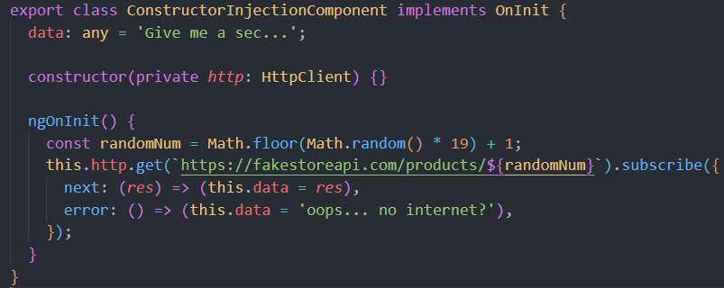
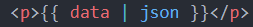

here, we are injecting an instance of HttpClient
-
don't get startled by the code within ngOnInit, this is another topic
entirely, observables
- the focus of this page, is simply one line, the constructor
-
behind the scenes, Angular creates a field for our variable 'http', which
is of type HttpClient

